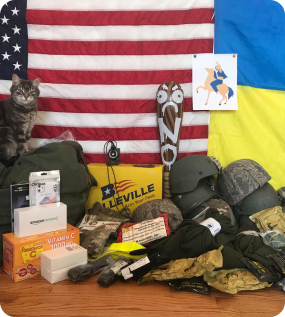

<section class="section gear">
    <div class="container">
        <div class="gear__wrapper">
            <div class="gear__content">
                <h2 class="gear__title">
                    Tactical gear
                </h2>

                <p class="gear__text gear__text--mod">We are Vadym’s friends in the USA. We collect small donations of tactical gear
                    from individuals and ship them to Ukraine. There is no donation too small - all are important! If
                    you have a larger donation or equipment that requires special export licenses, we can match you with
                    the appropriate non-profit organization in your area.
                   <a href="#" class="gear__link">Contact us</a>  </p>

                <h3 class="gear__subtitle">
                    Suggested Highest Priority items:
                </h3>
                <p class="gear__text">Body armor, carriers, plates, Kevlar helmets, load-bearing vests, tactical belts,
                    various military bags, tactical backpacks – any size, tactical knee and elbow pads, tactical gloves,
                    tactical glasses.</p>

                <p class="gear__text">Individual military first aid kits, tactical medical kits, Israeli bandages,
                    tourniquets, first aid splints, combat medical nasopharyngeal airway systems, foldable stretchers,
                    supplements for mental alertness.</p>

                <p class="gear__text">UBACS combat shirts, summer uniforms, combat boots, thermal underwear, insoles,
                    socks, summer balaclavas (full face), weather resistant clothing, army ponchos.</p>

                <p class="gear__text">Survival kits and camping gear: multitools, survival water filtration kits,
                    headlamps, flashlights, lanterns, sleeping bags, sleeping pads, thermal blankets (camo), emergency
                    tents (camo), military water bottles with pouches.</p>
            </div>
            <picture class="picture">
                <source
                        media="(min-width: 600px)"
                        srcset="../img/gear-desck.jpg, ../img/gear-desck@2x.jpg 2x"
                />
                
            </picture>
        </div>
    </div>
</section>